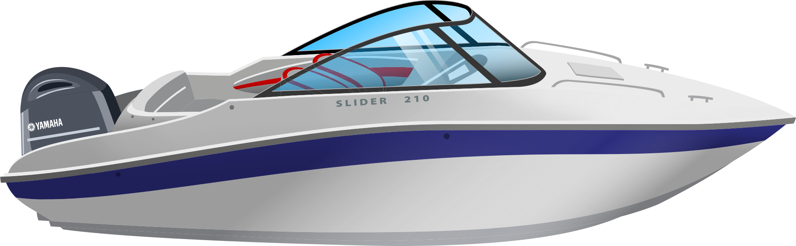

Верфь полного цикла в Конаково. Проектируем корпуса, формуем, собираем, делаем стёкла, привальный брус и мебель. Покупаем только то, что делают лучше нас: смолы, фурнитуру и моторы.

1 2 3 4 5 6Конаково, ул. Промышленная, 12. Шоурум со всем модельным рядом.
Приехать на верфь